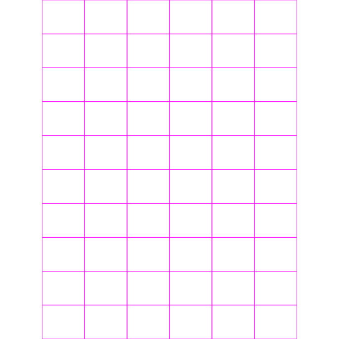
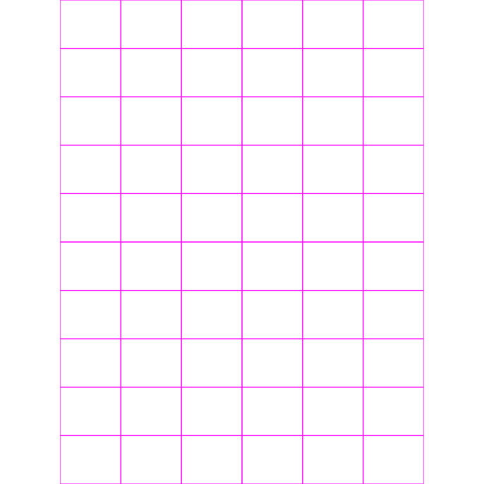

Olá! Eu sou o Carlos do

Aqui você encontra meus melhores projetos!
Produção de vídeo comercial para a Ponto Zero2, focado em destacar seus serviços de projeto e regularização de construções. Criado para redes sociais, com linguagem simples, objetiva e voltado para conversão.
Função no projeto: Filmagem, roteiro, edição e finalização.
Vídeo comercial para a Somos Empilhadeiras na AgroBrasília, com foco em soluções robustas para o agronegócio. Produção voltada à divulgação institucional no setor agro.
Função no projeto: Filmagem, edição e finalização.
Vídeo comercial para o salão de eventos Recanto do Lazer, localizado em Abadiânia. Destaque para a estrutura completa, localização e proposta de custo sob demanda. Produção voltada para redes sociais com foco em conversão.
Função no projeto: Filmagem, roteiro, edição e finalização.
Vídeo especial para o Dia das Mães produzido para a Hortênsia, com roteiro emocional e foco na conexão familiar.
Função no projeto: Roteiro, filmagem, edição e finalização.
Registro de um pedido de casamento surpresa, capturando a emoção do momento com sensibilidade e estética cinematográfica. Ideal para eternizar ocasiões especiais com autenticidade e impacto visual.
Função no projeto: Filmagem, edição e finalização.
Seleção dos melhores takes de um dia de drift com um Chevette preparado. Captação focada em ângulos dinâmicos, detalhes visuais, atmosfera de velocidade e Estilo cinematográfico
Função no projeto: Filmagem, edição e finalização.
Vídeo dinâmico produzido no evento CPM Meeting, com takes de carros fazendo drift sincronizados com batidas da música. Captação focada em movimento, som e estilo para transmitir a energia do encontro.
Função no projeto: Filmagem, edição e finalização.
Edit criativa com uso de efeitos visuais e elementos 3D aplicados sobre imagens captadas com iPhone 15. Um projeto que mostra que não é preciso uma câmera profissional para criar algo impactante, bastam boas ideias e pós-produção bem feita.
Função no projeto: Filmagem, VFX, 3D, edição e finalização.
 

Arraste para o lado!

É uma das ferramentas que mais domino. Uso para criar intros, efeitos especiais, animações e composições visuais que deixam meus vídeos mais profissionais. Com ele, adiciono movimentos e efeitos que transformam ideias simples em conteúdos marcantes.
 DaVinci Resolve
DaVinci Resolve
Nele faço a correção de cor antes mesmo de começar a edição. Assim, consigo um visual cinematográfico logo no início. O controle de contraste, exposição e cor ajuda a dar vida e qualidade às cenas. Essa etapa é uma das mais importantes para garantir consistência visual ao longo do vídeo
É meu software principal de edição. Nele organizo as cenas com ritmo e lógica, deixando os vídeos dinâmicos e fáceis de entender. Consigo usar ele junto com o After Effects, colocando efeitos e animações direto na edição, sem precisar exportar tudo de novo.
Uso ele para criar e ajustar ícones, PNGs e imagens com precisão, garantindo artes visuais profissionais alinhadas ao estilo do cliente. Além disso, o Photoshop integra-se ao After Effects, permitindo modificar frames de vídeos e facilitando o fluxo de trabalho.
É uma das ferramentas que mais domino. Uso para criar intros, efeitos especiais, animações e composições visuais que deixam meus vídeos mais profissionais. Com ele, adiciono movimentos e efeitos que transformam ideias simples em conteúdos marcantes.
DaVinci Resolve
Nele faço a correção de cor antes mesmo de começar a edição. Assim, consigo um visual cinematográfico logo no início. O controle de contraste, exposição e cor ajuda a dar vida e qualidade às cenas. Essa etapa é uma das mais importantes para garantir consistência visual ao longo do vídeo
É meu software principal de edição. Nele organizo as cenas com ritmo e lógica, deixando os vídeos dinâmicos e fáceis de entender. Consigo usar ele junto com o After Effects, colocando efeitos e animações direto na edição, sem precisar exportar tudo de novo.
Uso ele para criar e ajustar ícones, PNGs e imagens com precisão, garantindo artes visuais profissionais alinhadas ao estilo do cliente. Além disso, o Photoshop integra-se ao After Effects, permitindo modificar frames de vídeos e facilitando o fluxo de trabalho.
Filmmaker e Editor